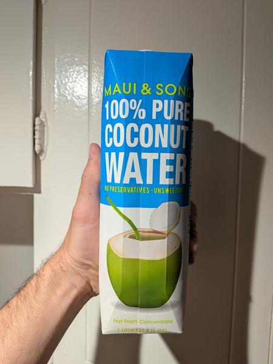

June 2025 · 1 L · Still · Pasteurized · No Added Sugar · Not Organic · Not from Concentrate
A bit disappointed that Maui & Sons’ product isn’t made in Maui, or even Hawaii for that matter. Instead, this is a run-of-the-mill Vietnamese boxed coconut water, pasteurized and shipped across the Pacific. This one is billed as ‘100% pure’, whatever that means. At least the only ingredient is coconut water.
Boring flavor profile. Tastes slightly burnt — despite the green coconut on the packaging, this has more of a brown-grey taste. Not as refreshing as a coconut water of this variety ought to be. Would not recommend.
These coconuts are grown in habitats threatened by palm oil deforestation. If you find this site useful, consider donating to the Rainforest Action Network.